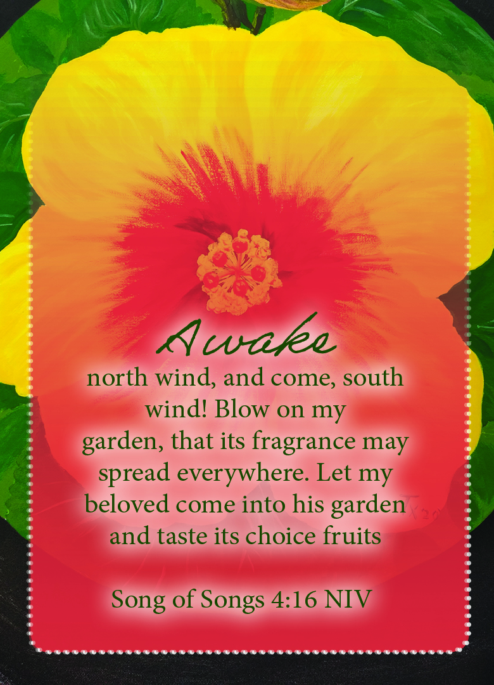

Song of Songs 4:16 NIV
,

Pray the Scripture
Father God, thank You for my
Bridegroom Jesus, Your Word says I became His bride when I chose to make Him King of my heart and my life. Help me
to prepare for His triumphant return. Give me a thirst for Your Word, and Your wisdom. Set my heart on fire for
Your love which feeds the flames. Give me a desire to go before You and behold Your face, to sit at Your feet and
minister to Your heart with passion. Teach me to be holy and righteous, partnering with Holy Spirit, as Your Word
says let my body be a living sacrifice holy and acceptable to You. Teach me how to be a clean and pure vessel that
I do not grieve or quench Holy Spirit who has chosen to live within me and keep my lamp filled with oil, from
intimacy with You in the secret place.
In The Name of Jesus Amen
Back To Prayer Card List